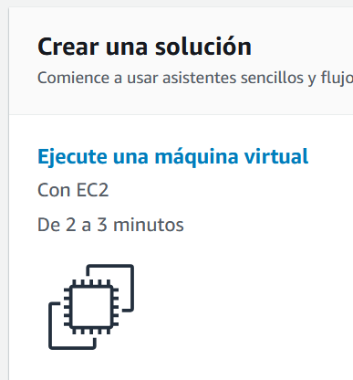
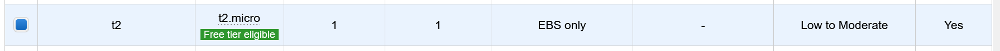
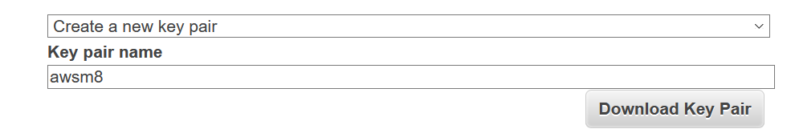
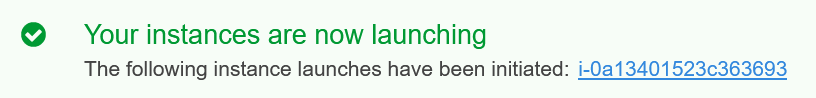
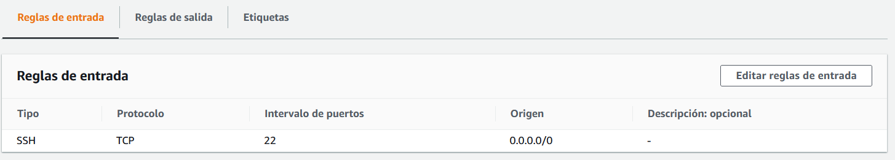
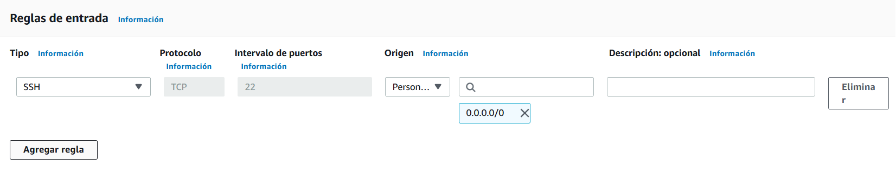
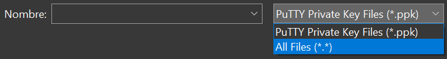
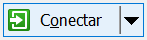
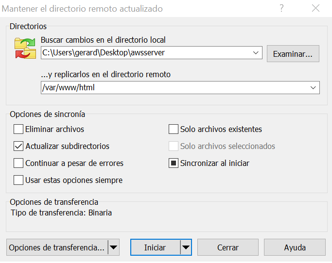

Instancia EC2
Una Instancia EC2 es como un contenedor o máquina virtual.
Crear instancia EC2
El primer paso es lanzar una instancia EC2. Es similar al comando lxc launch pero con un interfaz web.
-
Accede a la cuenta AWS, y ve a AWS Console:

-
Haz click en Ejecute una máquina virtual:

-
Busca "Ubuntu Server 20.04 LTS" y haz click en Select

-
Selecciona la opcion "t2.micro" y haz click en Review and Launch

-
En la siguiente pantalla haz click en Launch
-
Crea un par de claves publica/privada:
Selecciona Create a new key pair
Introduce Key pair name
awsm8
Haz click en
Download Key Pair

Se descargará un fichero awsm8.pem. Es importante que conserves este fichero.
Envíatelo por email a ti mismo.
-
Espera a qe se lanze la instancia (el contenedor). Cuando esté lista, haz click en el identificador
de la instancia (e.g.: i-0a13401523c363693).

-
En la Consola de instancias aparece el listado de instancias. Haz click en el identificador de la instancia:

-
En la pantalla de resumen, puedes encontrar la Dirección IP pública:

Configurar instancia EC2
El siguiente paso es configurar la seguridad de red de la instancia para permitir las conexiones al puerto 80 (web).
Es decir, permitir las peticiones al servidor Apache de la instancia desde cualquier lugar del mundo.
-
En la misma pantalla de resumen de la instancia, haz scroll hacia abajo y haz cick en la pestaña
Seguridad. Luego haz click en el Grupo de seguridad
(e.g.: sg-059ca5d71bcb3a (launch-wizard-1)):

-
Puedes ver que la única "Regla de entrada" que hay configurada es la que permite el acceso por SSH.
Editaremos las reglas para permitir el HTTP.
Haz click en Editar reglas de entrada

-
Haz click en Agregar regla

-
Introduce el Puerto 80 y el Origen 0.0.0.0/0 (significa desde cualquier origen; desde todo el mundo).
Haz click en Guardar reglas

Acceso a la instancia
El último paso es el acceso a la instancia.
Configuraremos el acceso SSH, para ejecutar comandos en la consola de la instancia.
-
Configuraremos el acceso a la carpeta /var/www/html de la instancia, para subir las paginas web.
Acceso desde Linux:
En primer lugar hay que establecer los permisos 400 al fichero de la clave privada awsm8.pem:
@host
chmod 400 awsm8.pem
Si el fichero awsm8.pem está en otra carpeta, debes indicarlo. Por ejemplo, si está en Escritorio
deberías poner: Escritorio/awsm8.pem
-
El acceso SSH desde Linux es muy sencillo. Simplemente abre el terminal y ejecuta:
@host
ssh -i awsm8.pem ubuntu@IP_DE_LA_INSTANCIA
Reemplaza IP_DE_LA_INSTANCIA por la IP correspondiente.
Una vez dentro de la consola ya puedes ejecutar el comando que quieras, por ejemplo:
@instancia
sudo apt update
sudo apt install apache2
-
El acceso a la carpeta /var/www/html de la instancia también es muy sencillo:
Antes de comenzar, cambia a ubuntu el propietario de la carpeta /var/www/html de la instancia:
@instancia
sudo chown -R ubuntu:ubuntu /var/www/html
Ahora puedes usar sshfs para conectar las carpetas:
@host
sshfs -o IdentityFile=awsm8.pem ubuntu@IP_DE_LA_INSTANCIA:/var/www/html carpeta
Reemplaza carpeta por la carpeta de tu ordenador donde quieres que te aparezcan los
ficheros de la instancia.
Acceso desde Windows:
-
Para el accesso SSH utilizaremos el programa putty.
Descarga e instala Putty: Instalador putty
En primer lugar hay que convertir la clave privada del formato .pem al formato .pkk:
-
Abre la aplicación PuttyGen:
Haz click en
Load

-
Selecciona All Files (*.*)

-
Busca el fichero awsm8.pem y haz click en
Abrir

-
Haz click en Save private key y
luego Sí
-
Introduce el nombre awsm8 y haz click en
Guardar

Una vez convertida la clave privada al formato .pkk, ya podemos usar Putty para acceder al servidor por SSH
-
Abre Putty
-
Introduce la IP de la instancia en
Host Name (or IP address)

-
En la categoría Connection > SSH > Auth, haz click en
Browse...

-
Selecciona el fichero awsm8.pkk
-
Haz click en Open
para abrir la sesión SSH.
-
Loguéate como usuario ubuntu

-
Una vez dentro de la consola ya puedes ejecutar el comando que quieras, por ejemplo:
@instancia
sudo apt update
sudo apt install apache2
-
Para el acceso a la carpeta /var/www/html de la instancia usaremos el cliente FTP WinSCP:
Antes de comenzar, cambia a ubuntu el propietario de la carpeta /var/www/html de la instancia:
@instancia
sudo chown -R ubuntu:ubuntu /var/www/html
Descarga e instala WinSCP: Instalador WinSCP
-
Abre WinSCP e introduce la IP del servidor:

-
Haz click en Avanzado
-
En el apartado SSH > Autentificación, haz click en el botón ..., y
busca el fichero awsm8.pkk.

Haz click en Aceptar
-
Haz click en 
-
Introduce el usuario ubuntu

-
Ve al menú ComandosMantener actualizado el directorio remoto
Introduce la carpeta local que desees, y la carpeta remota /var/www/html

Editar las páginas web
Una vez sincronizada una carpeta local con la carpeta /var/www/html de la instancia, ya puedes abrir
la carpeta local con VSCode y editar los ficheros web.
Puedes ver la web simplemente poniendo la IP de la instancia en la barra de direcciones del Navegador Web.